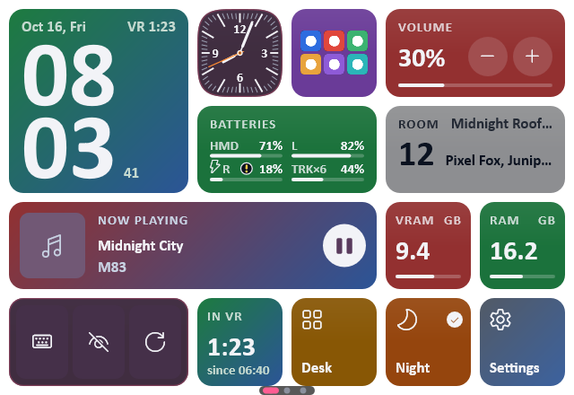

OrbitOverlay

OrbitOverlay
v1.18.0 · 24 Oct 2026A SteamVR overlay: a watch on your wrist, your PC screens around you, and a VR keyboard.
Website · GitHubby Erik1028 · free Windows apps, source on GitHub · What's new
On the desk and in VR, the apps talk to each other.
OrbitOverlay + Mixtape. Now playing on the watch is Mixtape’s song, with its cover and buttons; a tap opens Mixtape’s whole player in VR.
OrbitOverlay + VR Gallery. A photo you take in VRChat pops up on the watch, and one from this day a year ago; Open in VR Gallery takes it to the album.
OrbitOverlay + Hexpad. The stream dock’s keys, live on the watch and on a panel in VR, pressed with the laser.
OrbitOverlay + Prisma. The RGB widget runs the PC’s lighting through Prisma: on and off, brightness, quick effects and colours.
Hexpad + Prisma. A key or a knob on the dock changes Prisma’s colours, effects and brightness.